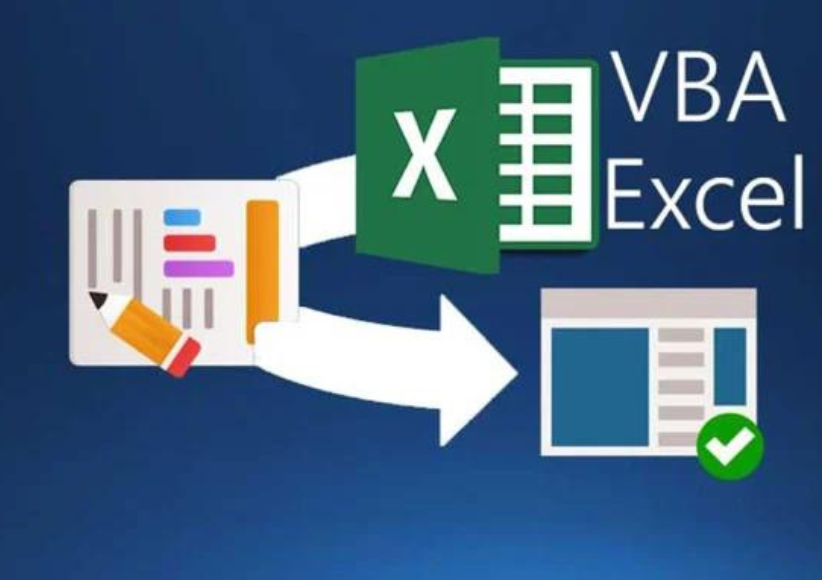
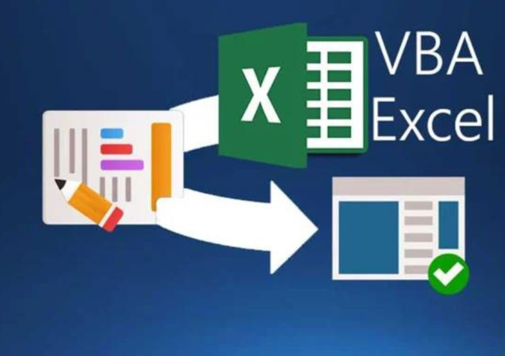
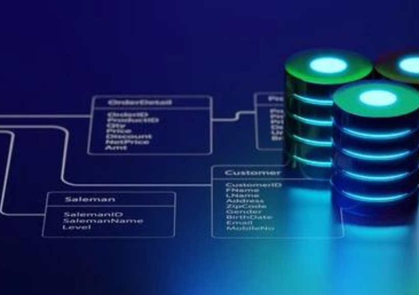
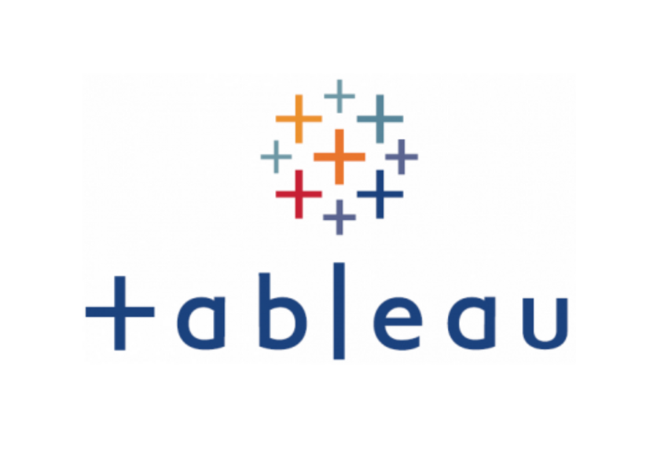

This section includes analyzing Bike sales for a Bikes selling company. Having obtained the dataset from Kaggle, activities such as data cleaning (find & replace, check currency value, remove decimals, spelling mistakes, duplicates, etc) were carried out
a new "age column" was added for better visualization. Pivot tables ad dashboard were added to answer different business questions such as does commuting distance affect need to purchase
bikes or not? what is the age range of our bike purchasers? what is their average income per gender? etc
Skills learnt: Data cleaning, Conditional formatting, Slicers, XLOOKUP,VLOOKUP, Pivot tables, Formulas, and many more
 

Within this project I learnt the foundamentals of VBA to analyze and automate data in excel. While learning by doing was the best way to lay the foundation, three micro projects within the excel file were created;
1. Trial page 1 - The user can select different cells and use the "fill colour" button to fill the cells with yellow colour as well as make the letter bold.
2. To do list- The user can add content on your to-do list and click on "Mark as complete" to mark the task as finished. To un mark the task the user may double click
3. Data extractor - In this micro project, the user can select the content / cells they find unique or want to use them on another sheet and click on the "Extract" button to transfer the information on the next sheet without copying and pasting the table header section.
Skills learnt: Recording and using Macros in excel, writing code in Visual Basic Editor, creating usable buttons in excel, etc

Within this project I obtained the dataset from Kaggle and the business problem statement was: A company wants to perform amalysis on its raw sales data to indentify which product
categories are having best and worst figures? The steps taken to answer this question was as follows;
1. Extract sales data from csv
2. Load sales data into excel using power query
3. Tansform data using ETL operation in excel as per business requirement
4. Build a data model
5. Build custom query to collect total sales by product category
6. Create a dashboard in excel to show client as I answer problem statement
Skills learnt: Using Power query in Excel (for connecting, transforming and combining data), Drawing logical data models, reporting data model, understanding dimensions and orders
loading data to create models, using queries in Power query editor to use formulas such as Joins, groupBy, Sum, among others

This section will take you to my tableau public account where you will have a glance of the different dashboards I have developed and analysed using different datasets to answer different business questions.
The first project titled "Airbnb - USA" was based on the business question, Where is the best place to buy a home and put it up on Airbnb in the US?
What factors does one have to look for?
The dataset used was obtained from Kaggle, wihle analyzing the data, I showed the client the best place for the project, the best times to put the house on
the market, what is the competition like based on number of rooms versus income and demand. This is also better showed in the dashboard. Some of the other dashboards were developed
while I was learning Tableau to understand the ins and outs of the platform.
Skills learnt: Data cleaning, Joins in Tableau, Calculated fields and bins, creating visualizations, filtering data to show only wanted information, creating maps in tableau, etc
.png)
This sections will take you to one of the first projects I worked on while learning the fundamentals of Python. With this in mind, a BMI calculator
inspired by Mercer-Health services in weight management was taken into account. During this project I used variables, conditional statements, among others and outside of
the project learnt for-loops, while-loops. lists, dictionaries, to mention but a few.
Currently I am still learning Python and will hopefully have more advanced projects on my portfolio.
NOTE: You may need to sign in to github to view this project.
Skills learnt: Variables, Data types, comparison logical and membership operators, conditional formatting, for Loops, While Loops, functions in python, etc
.png)
I enjoyed developing this project because it enabled me to discover the magic of python in "all things automation". I was able to wave goodbye to hours wasted
searching for files and organizing them whenever I dowloaded any sort of file.It felt like having a loyal assistant at my command (Pan intended). I acquired essential python programming
skills such as file manipulation, directory traversal, and metadata extraction. The project essentially enables one to navigate, rename, remove, copy, etc resulting in automatically and
intelligently sorting files based on various criteria, such as file type, file extension, alphabetical order, size, among others
NOTE: You may need to sign in to github to view this project.
Skills learnt: File manipulation, modules and exploring libraries:os,shutil,datetime, etc, file metadata extraction, designing using algorithms, error handling and exception
handling, documentation and best practices while using pytho as a programming language, etc

In this project I used python to web scrap daily headline news articles from a re-known newspaper company called "Daily Monitor" and had them delivered to my email inbox everyday. The project utilizes Selenium
web scraping library to extract relevant
information, filters the articles based on the "header" tags, and organizes them for further processing. With email functionality through a library that I used - smtplib, the program sends the news articles
using a designed email template. By completing this project, I was able to receive personalized news updates directly in my email inbox everyday which reduced the need to constantly go to the news company
website to keep up with what is going on daily in my home country - Uganda.
NOTE: You may need to sign in to github to view this project.
Skills learnt: Webscraping using selenium, data extraction from websites, proficient python programming skills: working with libraries, handling data structures, manipulating strings, and
implementing control flow, data manipulation and filtering, email integration setting up SMTP configurations, managing credentials, and designing email templates, automation and
scheduling, etc
Analyzing global debt using SQL with the World Bank dataset involves extracting and analyzing relevant information. By connecting to the World Bank's database or importing the dataset, SQL queries can be
written to retrieve specific data and perform analyses. Different queries answer the following questions;
- What is the total amount of debt that is owed by the countries listed in the dataset?
- Which country owns the maximum amount of debt and what does that amount look like?
- What is the average amount of debt owed by countries across different debt indicators?
NOTE: You may need to sign in to github to view this project.
Skills learnt: Proficiency in Sql through writing queries like; to retrieve, filter, aggregate data from a database. Skills such as data Extraction and Transformation, filtering data
based on specific criteria, converting data types, and handling missing or inconsistent values, calculate various debt-related metrics and perform analysis on the data. This was through calculating totals,
averages, percentages, and performing mathematical operations on the data to derive insights, database Management: Connecting to and working with the World Bank's database or importing the dataset into my
local database system will provide you with skills in managing databases. This includes skills in data import/export, creating and modifying tables, understanding database schema, and optimizing queries for performance.
This project focuses on analyzing global population data from 2015 using SQL. The objective is to gain insights into population distribution, growth rates, and demographic metrics worldwide.The methodology
involves data acquisition, database design, data cleaning and transformation, exploratory analysis, statistical calculations, visualization, and interpretation. Some of the questions answered include;
- What is the maximum and minimum of population growth in all the countries?
- Which countries are densely populated?
NOTE: You may need to sign in to github to view this project.
Skills learnt: SQL proficiency in managing and manipulating relational databases, querying databases, performing data transformations and analysis.
exploratory analysis to uncover patterns, trends, and insights within the data. By working on this project and extract meaningful information from datasets, such as calculating basic statistics,
statistical Analysis through analyzing population data may involve performing statistical calculations and aggregations.
Domain Knowledge: Working with data such as this provided me with the opportunity to gain knowledge about demographics, population trends, and socioeconomic factors worldwide. I was also able to
develop a deeper understanding of the factors influencing population growth, distribution, and regional differences.
The project below is a web-based project that would enable a user to do everything a bank normally allows them to do.In this case, the user is able to deposit and withdraw money from a particular account
depending on their preference. There's a validation to allow only a particular amount of cash inflows at any time, as well as to allow withdrawals if the balance is sufficient. It also includes the
calculation of interest and its addition to the balance every month.
NOTE: You may need to sign in to github to view this project.
Skills learnt: Better understanding and use of Java syntax, Object-oriented programming concepts, Familiarity with Java libraries and frameworks, naming variables, arithmetic operators
conditional statements, type casting, iterating over arrays, errors in programs, overloading, string, etc